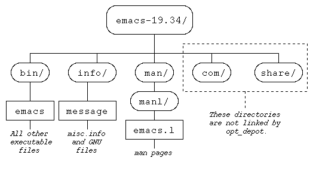
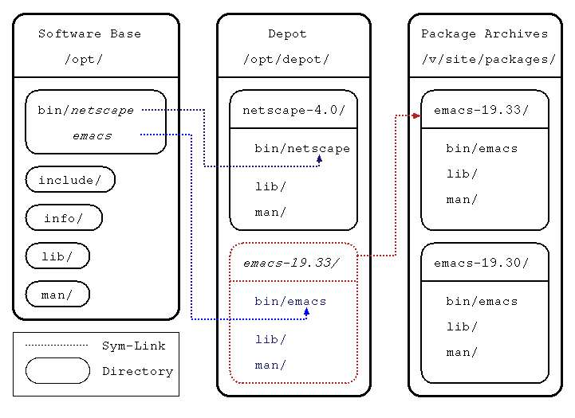

| Opt _depot 2.0 Overview |
Software management in a UNIX environment has always been one of the more tedious and frustrating tasks confronting a systems administrator. Keeping track of the numerous file dependencies and path requirements imposed by software vendors, testing new programs, maintaining current ones, and surgically removing the correct files when a piece of software is no longer in use: all these problems add considerably to the overall administrative workload.
In a networked system the situation is further compounded by the sheer amount of software that must be maintained and from having to address the conflicting needs of multiple users.
Opt_depot helps ameliorate the situation by providing administrators with a tool that allows them to organize the files needed to run a piece of software into discrete packages, and to keep them physically separate from one another. Software is installed into packages by the system administrator and opt_depot then manages a set of symbolic links to make the software accessible to the end-users PATH, MANPATH and library path variables.
When using opt_depot, software must be installed in a hierarchical structure known as a "package". Installing software in this form involves breaking down the program into its component files and placing them into sub-directories based on their content. There are several benefits to using a packaging system:
First, it clarifies installation by allowing different software programs to be kept in separate locations while maintaining the same overall directory structure. For example, if you have multiple packages you can be assured that any executables can be found underneath the /bin subdirectory of each package.
Second, this system makes it easy to remove a piece of installed software. Because the packages reside apart from one another, there is no need to keep track of which files belong to a given program. The packaging system insures that the files needed by a piece of software will always be located in its own sub-directories.
Finally, software is able to run from a different location than where it actually resides. Because the package structure complies with the typical pathnames used for running a piece of software, the program may be compiled to run from a certain location and then placed elsewhere. When installing the package a symbolic link to that package may be placed in a separate directory, effectively installing the software from that location.
The following diagram illustrates a typical package:

Here, directories are represented by ovals and individual files by rectangles. The emacs-19.34 directory contains bin, info, man, com and share sub-directories. All the emacs files are divied up into these directories based on their nature; bin/ contains the executables, while GNU information and documentation is placed in info/, etc.
By default, opt_depot would not make symbolic links under the com/ and share/ directories listed because the files in these directories shouldn't need to be accessed by anything other than the package itself. Creating directories like com/ and share/ is perfectly acceptable and often adds to the level of organization within the software package.
Even though software is stored in discrete packages, it should appear to the user that every piece of software is kept in the same location. Using symbolic links instead of accessing the software directly lets the user to specify a single directory in his or her PATH variables to access all the publicly available software on the system.
To accomplish this task, a software base directory is set up that contains /bin, /lib, /man, /include, and /info sub-directories, and within these sub-directories there are symbolic links to the /bin, /lib, /man, /include, and /info subdirectories of each package that is installed in a single directory called the depot directory. These directories can be used for direct installation as well; opt_depot can manage links in an existing directory without conflict.
However, conflicts can arise when the same files are found in two or more packages (e.g. X11R5 and X11R6). Opt_depot uses a file called .priority to help resolve these conflicts. What .priority does is spell out the precedence relationships among certain files, helping to ensure that the correct files are linked. It is a plain text file that by default is located under the software base directory, and it lists files and package names line by line. When there is a file name conflict, the .priority file is scanned and the package or file appearing first wins out. If neither file or package appears in the .priority file then conflict is resolved by leaving the current link in place.
Of course, there must also be a mechanism in place for removing installed packages, and for testing out new versions of software. Opt_depot uses exclusion files to determine which packages should be un-installed. If a package or individual file is listed in the primary .exclude file, no links to it will be built and any existing links will be removed. By default this file should be located under the software base directory.
In addition, each packge may have its own per-package exclusion file so that it may exclude any earlier versions that should not be linked in.
This diagram shows links going from the software base directory to two packages: netscape-4.0 and emacs-19.33. netscape-4.0 physically resides in the depot directory, whereas emacs-19.33 is in fact a symbolic link pointing to the emacs-19.33 package that resides the the package archives. Note also that emacs-19.30 is excluded and is not available from the depot directory.

Opt_depot provides a great deal of flexibility with respect to the nomenclature of the various directories opt_depot uses. The following table lists examples from our own opt_depot setup here at ARL, and the function that each directory serves:
| Directory Name | Example Directory | Purpose |
|---|---|---|
| Depot | /opt/depot |
Contains installed packages, either through symbolic links or by direct inclusion. |
| Software Base | /opt |
Contains the bin/lib/man/include/info sub-directories. |
| Package Archives | /v/site/packages | Software packages physically reside in the package archive directories. |
| Log | /logs/opt_depot | Where logging information from opt_depot, opt_link and opt_clean is kept. |
The opt_depot suite consists of five component pieces, each with its own specialized functions. Some of the functions, like those performed by the opt_depot script, are integral to the overall operations the opt_depot suite was designed to perform. The rest are tools used for managing the other opt_depot scripts. Here's a breakdown:
The Big Three - Scripts that carry out the linking functions of opt_depot.
opt_depot - This script is the core of the opt_depot suite. It is responsible for creating and maintaining links from the sub-directories contained in the software base directory to the sub-directories in each software package located in the depot directory.
opt_clean - opt_clean removes links to files that are non-existent or that have been excluded by the .exclude file.
opt_link - In a networked environment, opt_link creates symbolic links going from the depot directory to software packages located in separate software package archives. This allows packages to be compiled to run in the depot directory regardless of their actual location.
The Other Two - Scripts that help manage the opt_depot suite itself
opt_setup - Invokes opt_link, opt_depot and opt_clean with a single command. The purpose of this script is to automate the opt_depot process by llowing it to run from chron.
opt_nuke - Acts as a self-destruct switch. The opt_nuke script removes all the links that were created by opt_depot.
There are several files that allow the opt_depot suite to run smoothly. The first two, opt.config and sites, are created by the setup.sh program when opt_depot is installed on the system. The others must be created by the system administrator.
opt.config - This configuration file is created by the setup.sh installation program. The file provides the opt_depot scripts with the locations of the "depot", "software base" and "log" directories.
sites - The sites file contains the names and locations of the package archives. Also, the sites file may contains implicit prioritization of multiple package archives. See the opt_link 2.0 page for more details.
.priority - When opt_depot creates the links from the software base directory to the packages contained in the depot directory, file conflicts often arise. One method for dealing with these conflicts is by creating a .priority file, which gives percedence to selected files.
.exclude (including per-package exclusion files) - The .exclude file is used by opt_depot and opt_link un-install packages or individual files. If a file or package-name is listed in the master .exclude file, then its links will not be made or will be removed. In addition, each individual package has the option of having its own .exclude file as well, so a new version of a package can easily supersede the older version simply by having the older version listed in its .exclude file.